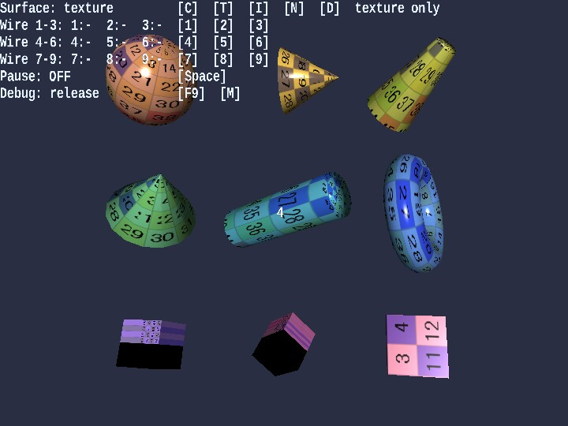

shapes
English | 日本語

概要
- primitive 系サンプル群の中では、texture / image normal / procedural normal の見え方比較を 1 本へ寄せる主入口です。
- 「texture を貼った見え」「法線マップの差」「wireframe」を同じ構図のまま切り替えて比較できます。
- Message は 3x3 配置の番号ラベルだけに使い、操作説明と状態表示は WebgApp 側の標準 HUD に寄せています。
実行方法
- 実行ファイルは ./shapes.html です
- WebGPU に対応したブラウザで開き、必要に応じて help panel や HUD と合わせて確認してください
使用している webg 機能
- Primitive: sphere / cone / donut / cube などの基本形状生成
- Shape.setWireframe: ワイヤーフレーム表示切り替え
- Texture: num256.png の読み込み
- Texture.buildNormalMapFromProceduralHeight: noise/dots 法線生成
- SmoothShader: texture + normal map と wireframe を同じ入口で扱う描画。flat shading も同じ shader 側の機能として切り替えられる
- Message: 3x3 配置の primitive 番号ラベルだけを重ねる
確認ポイント
- C / T / I / N / D で surface mode を切り替えたとき、同じ geometry のまま texture / image normal / procedural normal の差だけが変わることを確認します
- T で texture 比較、I で image normal 比較、N / D で procedural normal 比較が同じサンプル内で読めることを確認します
- 1 - 9 のワイヤーフレーム切り替えでトポロジが想定どおりかを確認し、surface mode を変えても線表示が破綻しないことを確認します
- cube / cuboid / mapCube を含む 9 形状で、texture と normal の両方が極端に破綻せず比較できることを確認します
操作方法
- C: solid color 表示
- T: texture 表示
- I: image normal 表示
- N: noise normal 表示
- D: dots normal 表示
- 1 - 9: 対応シェイプのワイヤーフレームON / OFF
- Space: 回転の一時停止 / 再開
- タッチボタン: C/T/I/N/D と 1-9、Pause をキーボードと同じ key 名で扱う